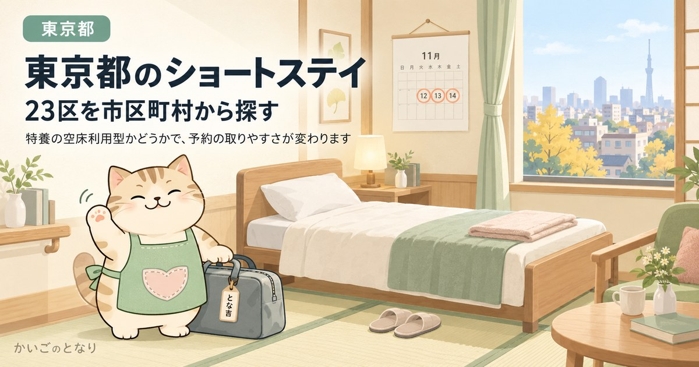

東京都のショートステイ

ショートステイは、数日から数週間、施設に泊まって介護を受けるサービスです。必要になってから探すと空きがありません。日数の上限、保険が効かない費用、予約の取り方を先に押さえておいてください。
市区町村から探す
世田谷区掲載中練馬区掲載中大田区掲載中江戸川区掲載中足立区掲載中杉並区掲載中板橋区掲載中葛飾区掲載中品川区掲載中江東区掲載中北区掲載中中野区掲載中豊島区掲載中新宿区掲載中目黒区掲載中墨田区掲載中文京区掲載中荒川区掲載中台東区掲載中渋谷区掲載中港区掲載中中央区掲載中千代田区掲載中八王子市準備中町田市準備中調布市準備中三鷹市準備中武蔵野市準備中狛江市準備中
東京都内で掲載中のエリアは23件です。準備中のエリアは、掲載できる事業者情報がそろい次第の公開となります。
東京23区のショートステイ事業所数と、空床利用型の数
掲載している23区だけで、区内の短期入所生活介護は合わせて385件あります。ただし区によって数が大きく違います。最も多い足立区が44件、最も少ない千代田区が5件で、8.8倍の開きがあります。
ショートステイで見るべきはそれだけではありません。特養の空床利用型は、本体の特別養護老人ホームが満床だとその分使えません。本サイト掲載分312件のうち36件がこの型です。お住まいの区で空床利用型の割合が高ければ、最初から隣接区も視野に入れたほうが早く決まります。
| 区 | 区内の事業所 | 本サイト掲載 | うち空床利用型 | うち単独型 |
|---|---|---|---|---|
| 足立区 | 44 | 20 | 3 | 3 |
| 練馬区 | 41 | 20 | 0 | 3 |
| 世田谷区 | 31 | 20 | 1 | 1 |
| 葛飾区 | 25 | 20 | 4 | 0 |
| 江戸川区 | 25 | 20 | 2 | 0 |
| 板橋区 | 24 | 20 | 6 | 2 |
| 杉並区 | 23 | 20 | 1 | 1 |
| 大田区 | 18 | 18 | 1 | 1 |
| 江東区 | 16 | 16 | 2 | 2 |
| 新宿区 | 13 | 13 | 1 | 2 |
| 品川区 | 13 | 13 | 1 | 1 |
| 北区 | 12 | 12 | 2 | 0 |
| 中野区 | 12 | 12 | 2 | 0 |
| 豊島区 | 11 | 11 | 1 | 1 |
| 荒川区 | 10 | 10 | 1 | 2 |
| 港区 | 10 | 10 | 1 | 0 |
| 墨田区 | 10 | 10 | 2 | 1 |
| 渋谷区 | 9 | 9 | 0 | 0 |
| 文京区 | 9 | 9 | 2 | 1 |
| 台東区 | 9 | 9 | 2 | 0 |
| 目黒区 | 8 | 8 | 0 | 0 |
| 中央区 | 7 | 7 | 0 | 0 |
| 千代田区 | 5 | 5 | 1 | 2 |
区内の事業所数は東京都が公表している指定事業所一覧の実数（2026年9月1日時点）。空床利用型と単独型の件数は、本サイト掲載分についての集計です。事業所の型は東京都の一覧の「事業所種別名」をそのまま使っています。空き状況は日々変わるため、この表では扱っていません。
この表の使い方
- まず自分の区の行を見る事業所が多い区なら、空床利用型を外しても候補が残ります。少ない区なら、最初から隣接区も当たってください。ショートステイは区外の事業所も使えます。
- 空床利用型の列は、予約の取りにくさの目安この型は特養の入所者用ベッドの空きを使うため、直前の予約が読めません。定期的に預けたいなら、専用の床を持つ事業所を先に当たります。
- 単独型の列は、費用がわずかに上がる目安単独型は併設型より基本報酬が高く設定されています。要介護3なら1日あたり42単位、1割負担で約48円の差です。決め手にはなりませんが、長期で使うなら効いてきます。
東京都のほかのサービス
東京都の訪問介護ホームヘルパーが自宅に来て、入浴・食事・掃除を手伝う介護保険サービス東京都の訪問看護医療的なケアが必要でも自宅で暮らすための、看護師の訪問東京都のデイサービス送迎・入浴・食事・機能訓練を日帰りで。家族が休める時間もつくる東京都の福祉用具レンタル介護ベッドも車いすも、買う前に借りられる。住宅改修は20万円まで東京都の宅配弁当・配食サービス高齢者専門の宅配弁当。手渡しで安否確認、やわらか食や治療食にも対応東京都の高齢者可の賃貸年齢を理由に断られない部屋探し。公的な居住支援と専門サービス東京都の家事代行介護保険では頼めない掃除・洗濯・買い物・庭の手入れを任せるエリア準備中東京都の見守りサービスひとり暮らしの安否を、センサー・電話・訪問で確かめる仕組みエリア準備中東京都の終活生前整理・エンディングノート・相続の手続きを、家族が困らない形にエリア準備中